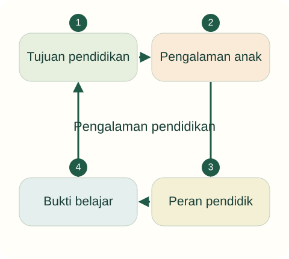
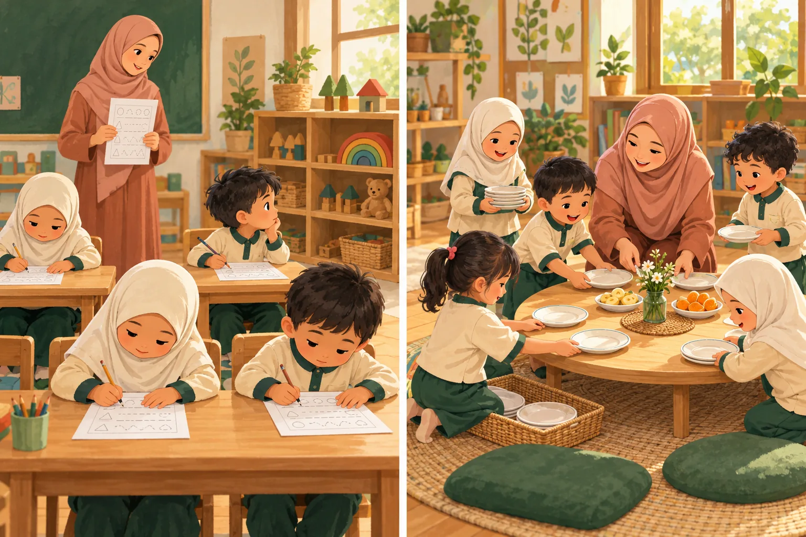

Tujuan pembelajaran
- Membedakan lima istilah pendidikan
- Menjelaskan hubungan pengalaman dan belajar menurut Dewey
- Memisahkan pertimbangan nilai dari dugaan tentang hasil belajar
Pendidikan memberi arah pada pengalaman
Pendidikan adalah usaha yang disengaja untuk membantu manusia mengembangkan kemampuan dan membentuk cara bertindak dalam kehidupan bersama. UU No. 20 Tahun 2003 Pasal 1 angka 1 memberi dasar yuridis dengan menempatkan keaktifan peserta didik di dalam suasana dan proses belajar yang dirancang. Ada dua pertanyaan ketika menilai tindakan pendidik. Perubahan apa yang dianggap bernilai? Pengalaman apa yang memungkinkan anak bergerak ke arah itu? Pada kegiatan makan, misalnya, anak dapat sekadar menerima piring atau berkesempatan memikirkan pembagian yang adil. Perbedaan pengalaman itu penting meski meja akhirnya sama-sama rapi.
Lima istilah dalam satu kegiatan
Pengasuhan berpusat pada kebutuhan, perlindungan, dan hubungan. Menyediakan air bersih dan membantu anak merasa aman saat makan adalah pengasuhan. Pengajaran adalah tindakan sengaja membantu anak memahami sesuatu, misalnya menunjukkan cara menentukan jumlah piring. Pembelajaran mencakup interaksi anak, pendidik, bahan, dan lingkungan yang memungkinkan anak belajar. Pelatihan menekankan praktik berulang untuk meningkatkan kecakapan, misalnya mencoba menuang air dengan lebih terampil. Pendidikan memberi arah pada keseluruhan pengalaman tersebut, misalnya belajar bertanggung jawab atas bagian tugasnya dan memperhatikan kebutuhan teman. Kelima istilah ini menyoroti aspek yang berbeda dari peristiwa yang sama.
Dewey dan mutu pengalaman
John Dewey (1938/1997) mengajukan dua kriteria untuk membaca pengalaman. Interaksi menghubungkan kondisi anak, seperti minat dan pengalaman sebelumnya, dengan kondisi yang tersedia, seperti pertanyaan guru dan benda yang dapat digunakan. Kontinuitas melihat bagaimana pengalaman sekarang membentuk kemungkinan belajar berikutnya. Pembagian piring menjadi lebih bermakna jika anak kemudian memakai strategi satu-benda-untuk-satu-orang ketika membagikan gelas. Pada kesempatan pertama ia mungkin hanya mengikuti petunjuk. Untuk melihat perkembangan, guru memberi kesempatan menerapkan strategi lagi dalam situasi yang sedikit berbeda.
Dalam kelas PAUD, mutu pengalaman juga ditentukan oleh pilihan yang tersedia bagi anak. Guru dapat menunjukkan cara menata satu piring, meminta anak melanjutkan, lalu mendengarkan alasan ketika ia mengubah susunan. Tindakan tersebut membantu pendidik melihat bagian mana dari tugas yang dipahami dan bagian mana yang masih memerlukan contoh. Sujiono (2009) dapat dibaca sebagai pengantar konteks pendidikan anak usia dini di Indonesia.
Ilmu pendidikan memeriksa alasan dan bukti
Ilmu pendidikan mengkaji tujuan, proses, dan akibat pendidikan secara sistematis. Pertanyaan normatif memeriksa apa yang patut diupayakan, misalnya mengapa anak perlu diberi kesempatan menyatakan pendapat. Pertanyaan empiris memeriksa apa yang terjadi, misalnya apakah lebih banyak anak ikut membagi piring setelah tugas dibagi menjadi peran kecil. Pengamatan dapat memperbaiki penjelasan tentang praktik. Pilihan untuk menghormati anak tetap memerlukan alasan etis. Dari satu pengamatan, guru dapat menyusun dugaan kerja dan merancang pengamatan berikutnya.
Diagram konsep

Kapan kegiatan sehari-hari menjadi pengalaman pendidikan?

Di satu kelas, anak mengerjakan lembar yang meminta mereka memasangkan gambar dengan jumlah benda. Di kelas lain, anak membantu menyiapkan meja. Seorang anak menaruh dua piring di satu tempat, lalu guru bertanya bagaimana memastikan setiap teman mendapat satu piring.
- Apa yang dikerjakan anak sendiri di setiap adegan?
- Di mana ada peluang menjelaskan strategi?
Pembahasan kasus
Pada kedua adegan anak mungkin mempelajari hubungan satu lawan satu. Bandingkan apa yang dilakukan anak sendiri. Pada lembar tugas, anak dapat menjelaskan alasan memasangkan gambar. Saat menyiapkan meja, anak dapat menemukan dan memperbaiki pembagian yang belum merata. Catat ucapan atau tindakan yang menunjukkan strategi anak pada masing-masing kegiatan.
Buka contoh penalaran setelah mencoba
Bandingkan gerakan anak pada kedua adegan dan usulkan bukti bahwa ia memahami hubungan satu lawan satu.
Amati apakah anak memasangkan satu benda dengan satu tempat, lalu menerapkan cara itu pada benda lain.
Latihan terbimbing
Uraikan kegiatan cuci tangan. Mulai dari tersedianya sabun dan bantuan untuk anak, lalu identifikasi tindakan mengajar, latihan yang diulang, dan tujuan pendidikan yang dapat diupayakan.
Latihan mandiri
Pilih satu rutinitas RA. Dalam 150–200 kata, bedakan tiga istilah dari materi dan usulkan satu bukti bahwa anak mulai memahami tindakan yang dilakukannya.
Lihat pembahasan
ia memakai strategi yang sama saat membagikan sendok, tanpa dituntun langkah demi langkah
Penerapan pada tugas sejenis memberi petunjuk bahwa strategi mulai dikuasai. Pengetahuan tentang keadilan memerlukan bukti tambahan.
Refleksi calon pendidik
Kegiatan mana yang pernah saya nilai berhasil dari hasil akhir saja? Bukti apa yang akan saya cari sekarang?
Catatan hanya disimpan di peramban ini. Tidak dikirim kepada dosen.
Referensi dan bacaan pendamping
- Republik Indonesia. (2003). Undang-Undang Nomor 20 Tahun 2003 tentang Sistem Pendidikan Nasional.Fokus Pasal 1, 3, 13, dan 28. Status UU secara keseluruhan tidak berarti seluruh pasal bebas perubahan atau putusan pengadilan.
- Dewey, J. (1997). Experience and education. Touchstone. (Original work published 1938)Bacaan klasik tentang kualitas pengalaman pendidikan. Tahun kutipan dibedakan antara karya asli dan terbitan ulang.
- Sujiono, Y. N. (2009). Konsep dasar pendidikan anak usia dini. Indeks.Bacaan pendamping Indonesia; metadata terbitan diverifikasi melalui katalog. Isi buku tidak dikutip langsung dan bagian regulasi lamanya perlu dimutakhirkan.